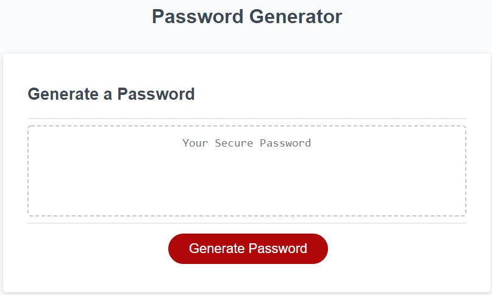

Hello and welcome to my portfolio! As indicated by the large banner at the top of this page, my name is Josh Klein, and I am learning to be a full stack web developer! So far I have 3 months of Java programming under my belt, and am delving deeper into the world of HTML, CSS, and JS each day. As there isn't much to tell about my coding career just yet, I'll take this opportunity to fill this portion of the page with a little bit about me outside of the computer science world. One of my biggest passions is rock climbing. And believe it or not, I believe programming and rock climbing are related. In rock climbing I push myself to complete routes, or "problems". No matter the difficulty of the problem, I will keep throwing myself at it, until I have conquered it and reached it's summit! The same can be said for the problems you might face, and need solved by someone like me. So I hope you enjoy what you see so far, and check back again frequently as I continue my journey and end up on top of many more problems!
Work

Future Work